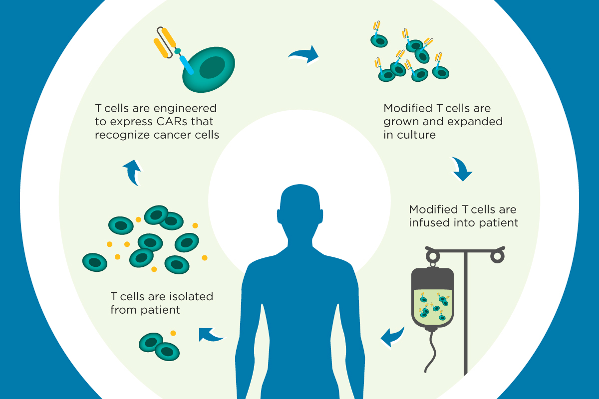

Does it pay?
The question that is never asked in a biology department,
and is the only one some products ever fail.
The question that is never asked in a biology department,
and is the only one some products ever fail.

Memorial Sloan Kettering Cancer Center
You saw this in the first lecture, so this is a reminder rather than a lesson. T cells are taken out of the patient, engineered to carry a chimeric antigen receptor that recognises their cancer, grown up in culture, and given back. It is one of the genuinely great achievements of this field: a living drug, made from the patient, that cures people who had no other option. Every claim I am about to make takes all of that as true. What I want to look at is the four arrows, because each one of them is a step somebody has to pay for, and the figure is drawn in a way that hides how many steps there really are. A reprise of the CAR T-cell therapy cycle from the Introduction lecture: T cells isolated from the patient, engineered to express chimeric antigen receptors, expanded in culture, and infused back into the patient.Then: how much capital, and how many years, before the first unit is sold?
So here is the whole method, and it is four questions you can answer on a napkin before you touch a pipette. One. How many units a year. Not the market you can imagine, the market you can physically reach and are permitted to sell into. For CAR-T that is not everyone with the cancer; it is the ones who are eligible, referred, and still well enough. Two. What will the buyer bear — and notice that is a different question from what the thing is worth, and that the buyer is very often not the person who benefits. A payer, a government, a donor. Three. What one unit costs, taken off the process diagram rather than guessed, and counting the parts people leave out. Release testing. Failed runs. Cold chain. Four, and this is the one that decides: does that cost fall as the number rises? If it does, you have a product, and scale is your friend. If it does not, you have a service, and every new customer costs you again. CAR-T is the second kind. So was the whole cell-therapy sector's valuation, which was priced as though it were the first. And then the question underneath all four: how much capital, over how many years, before anyone pays you anything. That is what determines whether the answer to the first four even matters. The four-number test, built one line at a time. One: how many units a year, meaning the market you can reach rather than imagine. Two: what the buyer will bear, and who the buyer actually is. Three: what one unit costs, taken from the process diagram including release testing. Four, highlighted as the one that decides: does that cost fall as the number rises — because if it does not, you have a service wearing a product's valuation. Then a final line: how much capital, and how many years, before the first unit is sold.A ten-cent bacterial test strip for arsenic in well water. A hundred million people are drinking it. Build the business.